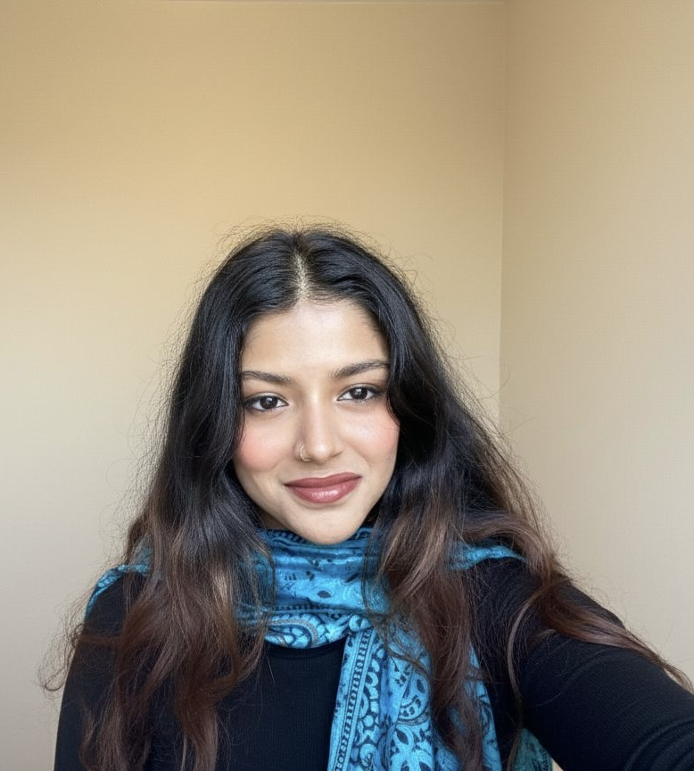

Human-Computer Interaction Researcher · Seeking PhD opportunities

A Research Associate at the University of Birmingham working at the intersection of HCI, VR, wearable haptics, fabrication, and Human-AI Interaction. My research investigates how multisensory feedback can make immersive experiences safer, more embodied, and more inclusive — work that recently produced a first-author publication at CHI 2026. I'm currently seeking PhD opportunities in HCI and emerging technologies.
My research sits at the meeting point of immersive technologies, embodied feedback, and human-centred AI — anchored throughout in a concern for safety, accessibility, and lived user experience.
Peer-reviewed publication at the ACM CHI Conference on Human Factors in Computing Systems — the flagship venue for HCI research — to be presented in Barcelona in 2026.
A wearable haptic belt that extends mixed-reality collision awareness below the user's field of view — addressing a known safety gap in immersive experiences where lower-body obstacles fall outside visual attention. Controlled user studies (n=35+) compared multisensory feedback strategies for embodiment, task performance, and perceived safety.
@inproceedings{mukherjee2026belt,
author = {Mukherjee, Devika and Abdlkarim, Diar and Giunchi, Daniele and Di Luca, Massimiliano and Ofek, Eyal},
title = {Belt and Whistles: Adding Lower Body Collision Awareness for MR Experiences},
booktitle = {Proceedings of the ACM CHI Conference on Human Factors in Computing Systems (CHI '26)},
year = {2026},
location = {Barcelona, Spain},
publisher = {ACM},
doi = {10.1145/3772318.3793143},
url = {https://dl.acm.org/doi/10.1145/3772318.3793143}
}
A trajectory from biotechnology and laboratory data analysis into immersive technology research — culminating in a first-author CHI publication.
Case studies spanning behaviour-change research, healthcare HCI, IoT product design, AI ethics, and quantitative UX analysis.
If you're a supervisor or research group working on VR/XR, haptics, wearable technologies, or Human-AI interaction — I'd love to hear from you.